La historia de la Puerta del Sol es una parte importante de la memoria de la ciudad de Madrid, no sólo porque la Puerta del Sol es un lugar de visita frecuente, sino también porque es el "centro de gravedad" del urbanismno de la ciudad. Desde sus oscuros inicios como calle ancha e impersonal en el siglo XVI, hasta las descripciones de los primeros viajeros románticos, la recepción de reyes, levantamientos populares, manifestaciones, etc.
La plaza ha adquirido su carácter de importante lugar histórico. Desde la batalla contra los invasores franceses en 1808 hasta la proclamación de la Segunda República en 1931, ha sido escenario de importantes acontecimientos en la vida de la ciudad, manteniendo su lugar como protagonista de las costumbres de las Doce Uvas. en honor al Año Nuevo. Hoy, es el centro de comunicación de la capital, la sede, el lugar de celebración, el punto de partida de fiestas y manifestaciones.
En sus orígenes, la Puerta del Sol fue un lugar de actividad comercial. La plaza ha sido un centro neurálgico para mercadillos y actividades comerciales desde épocas antiguas, y esta tradición continúa hasta el día de hoy. Diversos mercados y ferias han tenido lugar en la Puerta del Sol a lo largo de los años, contribuyendo a su carácter dinámico.
En 1857, se construyó la Real Casa de Correos en la Puerta del Sol. Este edificio, con su icónico reloj, se convirtió en un elemento central de la plaza. El reloj de la Casa de Correos es conocido por ser el punto de referencia para las celebraciones de fin de año en España.
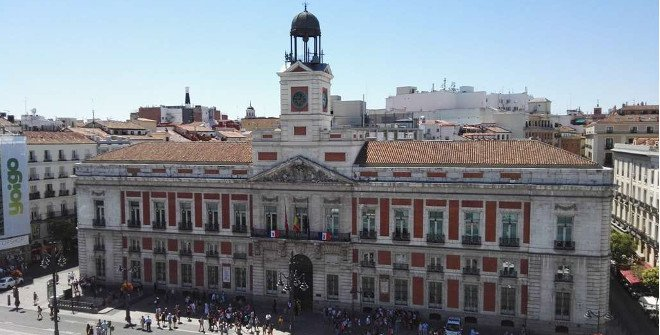La Puerta del Sol fue escenario de un evento crucial en la historia de España durante la Guerra de la Independencia Española. El 2 de mayo de 1808, el pueblo madrileño se levantó contra las fuerzas francesas que ocupaban la ciudad, marcando el inicio de la Guerra de Independencia contra Napoleón. La revuelta, centrada en la Puerta del Sol, fue sangrienta, con enfrentamientos entre los madrileños y las bien equipadas tropas francesas. Francisco de Goya inmortalizó este evento en su famoso cuadro "La carga de los mamelucos en la Puerta del Sol". La brutal represión posterior, incluyendo fusilamientos y la Guerra de Independencia, dejó una placa conmemorativa en la fachada del edificio de Correos, recordando a los héroes populares del levantamiento del 2 de mayo de 1808. Este incidente tuvo un impacto duradero en la historia de España y en la Puerta del Sol.
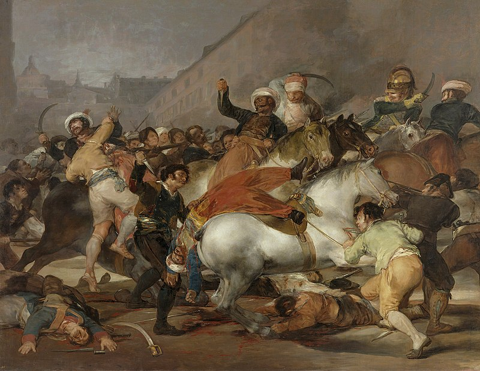La Casa Cordero, construida en el siglo XIX, es un edificio emblemático situado en la Puerta del Sol. A lo largo de los años, ha sido testigo de cambios significativos en la plaza y ha sido parte integral de su historia arquitectónica.
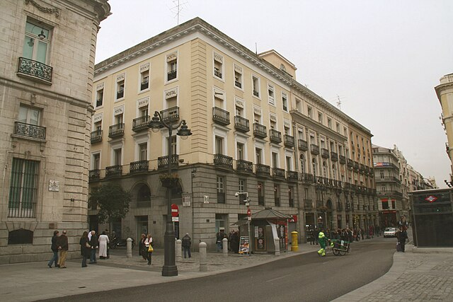La Puerta del Sol experimentó su primera gran reforma en el siglo XIX, cuando las murallas medievales que rodeaban Madrid fueron derribadas. Este proceso de modernización contribuyó a la apertura y expansión de la plaza.
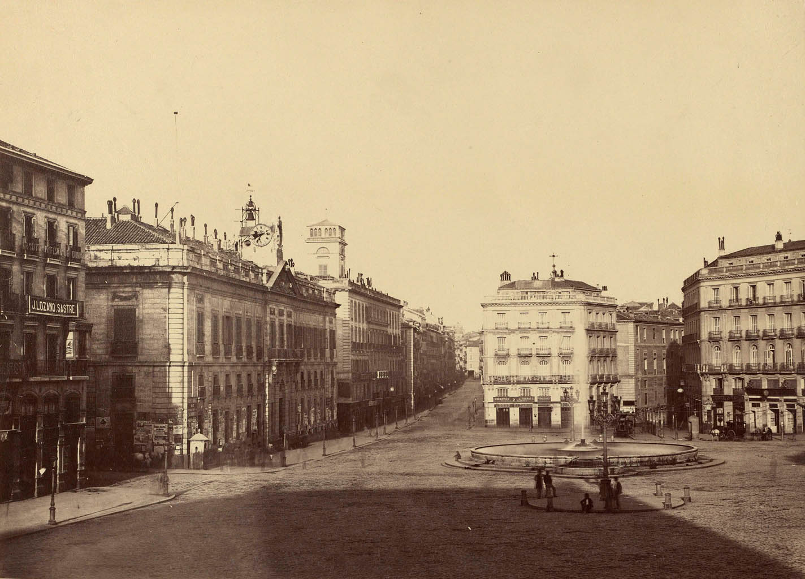A medida que Madrid se desarrollaba, la Puerta del Sol se convirtió en un importante centro de transporte. La llegada de nuevos medios de transporte, como los tranvías y el metro, transformó la movilidad en la ciudad y aumentó la importancia de la Puerta del Sol como punto de conexión.
Los tranvías fueron una parte significativa del sistema de transporte en Madrid, y la Puerta del Sol jugó un papel clave como punto de convergencia de estas líneas de tranvía.
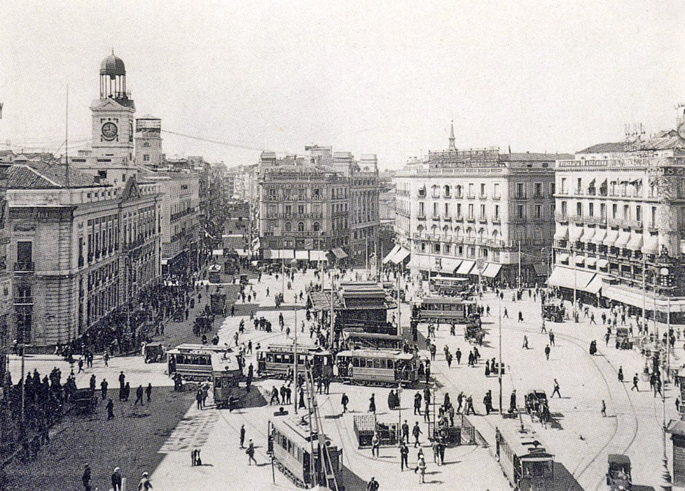La introducción del metro en Madrid, con una estación en la Puerta del Sol, marcó otro hito en la historia del transporte en la ciudad. La estación de metro en la Puerta del Sol es una de las más transitadas y simbólicas de toda la red.
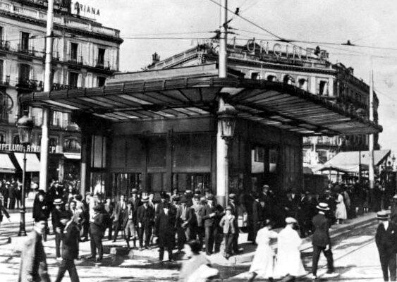El reloj en la Casa de Correos también es conocido como el Reloj de Gobernación. Este reloj ha sido un símbolo crucial de la Puerta del Sol y es famoso por marcar las campanadas de fin de año en España.
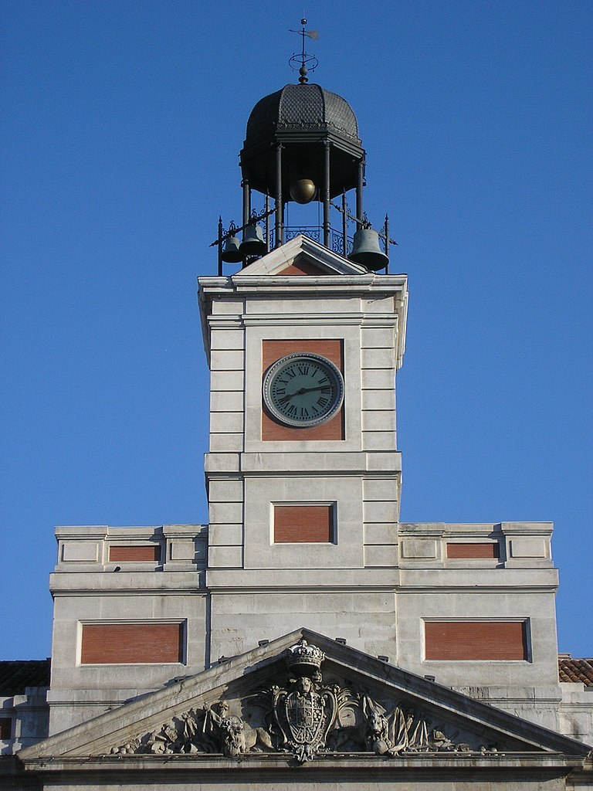Desde 1962, la Puerta del Sol ha sido el epicentro de las celebraciones de fin de año en España. La tradición de las doce uvas, en la que la gente come una uva por cada campanada del reloj, se lleva a cabo en la Puerta del Sol y es retransmitida en todo el país.
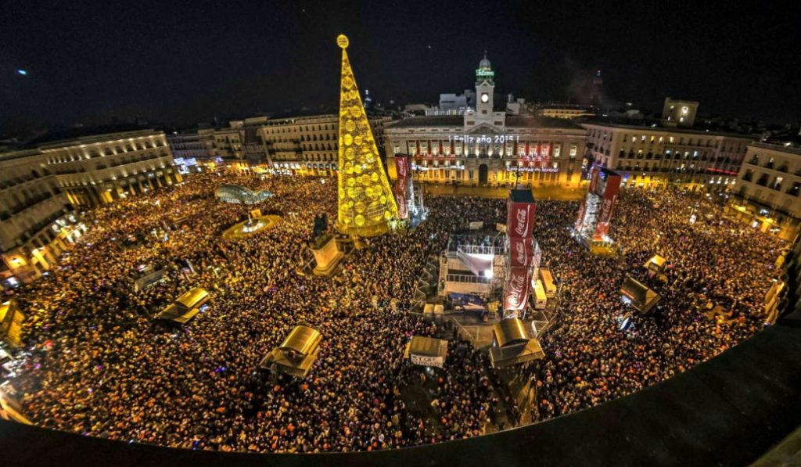Durante la Segunda República Española (1931-1939), la Puerta del Sol fue testigo de importantes eventos políticos y sociales. Este periodo estuvo marcado por cambios significativos en la estructura política y social de España. La Puerta del Sol se convertiría en el centro neurálgico de celebraciones y protestas durante la República
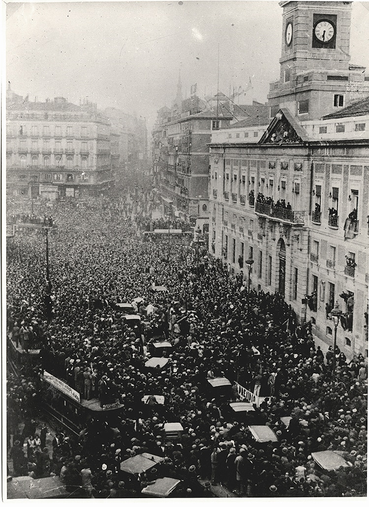La batalla de Madrid comenzó el 6 de noviembre de 1936, cuando las fuerzas del General Franco y Mola avanzaron hacia la capital con la intención inicial de tomarla rápidamente. La Puerta del Sol sufrió daños durante los bombardeos aéreos de noviembre de 1936, incluida una explosión que abrió un cráter significativo. Los bombardeos artilleros desde la Casa de Campo continuaron afectando la zona, con la Puerta del Sol siendo objetivo frecuente de proyectiles de 155 milímetros. El año 1936 concluyó con un bombardeo durante la Nochevieja. Tras la firma del último parte de guerra por Franco el 1 de abril de 1939, sus tropas ocuparon la Puerta del Sol, marcando el inicio del periodo de posguerra. Se llevaron a cabo restauraciones para reparar los daños causados por el conflicto en este lugar y los edificios circundantes.
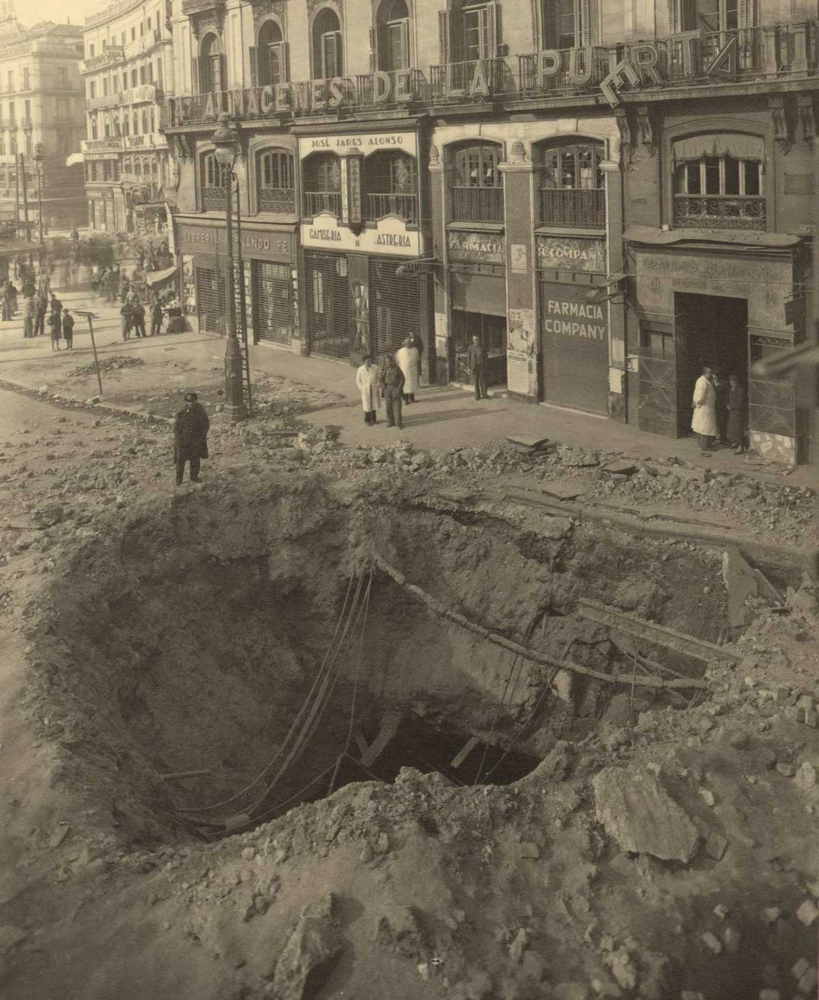La segunda remodelación de la Puerta del Sol tuvo lugar entre 2005 y junio de 2009. Sus objetivos eran el aumento de la zona peatonal, la reducción del tráfico rodado, la conexión de las redes de Metro y Cercanías, la eliminación de paradas de autobús, y la mejora de la infraestructura de la estación de Metro. Se reubicó la estatua de la Mariblanca y se cambió la ubicación del oso y el madroño. La acera en la parte norte se amplió, y se limitó el acceso de vehículos a la plaza. Se añadió una nueva placa conmemorativa del kilómetro cero.
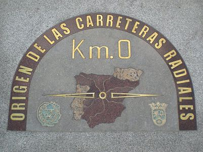 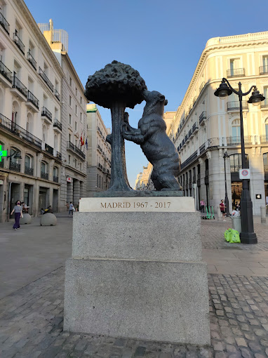En marzo de 2022 comenzó la tercera remodelación de la Puerta del Sol, que se espera que finalice en el tercer trimestre de 2023. Estas obras abarcarán la peatonalización completa de la zona y llevarán a cabo cambios significativos, como la sustitución del pavimento y del alumbrado. Además, se integrará nuevo mobiliario urbano, se reubicarán quioscos y se eliminarán las dos fuentes existentes, siendo reemplazadas por una nueva de mayores dimensiones. En este espacio renovado, se instalará la estatua ecuestre de Carlos III. También se tiene planeado cambiar la boca principal de acceso a la estación de metro y Cercanías, por una estructura de vidrio.